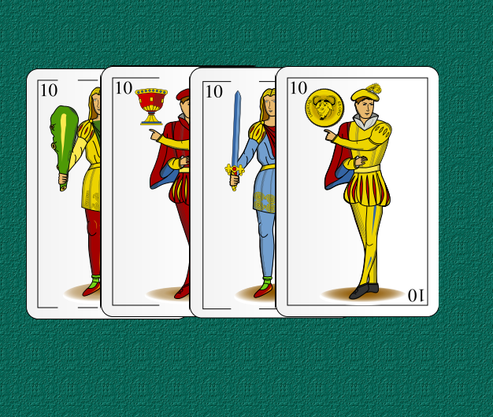

Documentación del Desarrollo del Siete y Medio
Aquí encontrarás información sobre cómo se han resuelto alunos problemas al desarrollar el juego.

Aquí encontrarás información sobre cómo se han resuelto alunos problemas al desarrollar el juego.
Han surgido muchisimos problemas con estas casuisticas de implementar la lógica de la banca, de los boots y me han llevado muchas horas para solucionarlo. No he podido finalizar las querys que te muestran los registros de las rondas y las partidas.
La logica de la banca la he implementado creando una función llamada turnAutomatic en una clase llamada PlayerBO y a continuación te explico lo que hace cada parte del codigo:
Imprime el valor de la apuesta del jugador en el banco.
Genera un número aleatorio r entre 0 y 1 y lo utiliza para calcular el número de rondas bancarias (numBankTurns) en el rango de 1 a 4 (ambos inclusive).
Inicializa una variable i para llevar el conteo de las rondas jugadas y establece la variable moreCards como verdadera.
Comienza un bucle while que se ejecuta mientras moreCards sea verdadero.
Dentro del bucle, obtiene una lista de cartas para el jugador (solo una carta en este caso) llamando al método getPlayerCard(1).
Guarda el registro del juego del jugador.
Muestra la información de la carta obtenida (valor y nombre) al jugador y suma el valor de la carta al total de la ronda del jugador (playerBO.getTotalRound()).
Verifica si el total de la ronda del jugador supera 7.5. Si es así, imprime un mensaje indicando que el jugador (o el banco) ha perdido y establece moreCards como falso para salir del bucle.
Incrementa el contador i en 1 para llevar el seguimiento de las rondas jugadas.
Comprueba si se ha alcanzado el número máximo de rondas bancarias (numBankTurns). Si es así, establece moreCards como falso para salir del bucle.
Retorna el objeto playerBO actualizado.
A continuación, se explica en detalle cada parte del desarrollo del codigo para establecer prioridad a cada jugador que participara en la partida:
Este método recibe dos parámetros: "players", que es un HashMap que contiene los jugadores del juego, y "cardgame_id", que es un entero que representa el ID del juego de cartas.
Se crea una lista vacía llamada "playerList" que contendrá los objetos PlayerBO (representando a los jugadores del juego).
Se itera sobre cada entrada del HashMap "players" utilizando el método "forEach". En cada iteración, se obtiene una clave (key) y un valor (value) asociado.
Dentro del bucle, se realiza un casting del valor a un "HashMap
Se llama al método "getPlayerCard" pasando el número 1 como argumento y se obtiene una lista de objetos CardBO llamada "card". Luego, se asigna la prioridad de la primera carta de la lista al jugador actual.
El objeto PlayerBO se agrega a la lista "playerList". Además, se llama a un método llamado "save_player_game" pasando el ID del juego de cartas, el objeto PlayerBO y el ID de la primera carta de la lista.
Al final del método, se realiza una operación de streaming en la lista "playerList". Primero, se ordena la lista en función de la prioridad de los jugadores utilizando un comparador. Luego, se recoge (collect) los elementos en una nueva lista y se devuelve como resultado.
Este método llamado "getPlayerCard" recibe el número de jugadores como argumento. Crea un objeto "Cards" y luego llama a su método "getCards" pasando el número de jugadores. El método "getCards" devuelve una lista de objetos CardBO que representa las cartas de los jugadores. Esta lista se devuelve como resultado.
Te explcio como he desarrollado la inserción de la información de las partidas en la BBDD
El código incluye varios métodos relacionados con el almacenamiento y actualización de información en una base de datos.
El método llamado "saveCardGame" guarda un juego de cartas en la base de datos. Recibe un parámetro "startGame" de tipo Timestamp que representa la hora de inicio del juego.
Primero, se crea una instancia de la clase "Main" y se obtienen las configuraciones del juego a través del método "getGameSettings". Luego, se establece una conexión a la base de datos y se prepara una consulta de inserción (INSERT) para la tabla "cardgame". Los valores de los parámetros se establecen utilizando los valores obtenidos de las configuraciones del juego. Después de ejecutar la consulta, se obtiene la clave generada (ID) del juego insertado utilizando el método "getGeneratedKeys" y se almacena en la variable "id". Finalmente, se devuelve el ID del juego insertado.
El método llamado "updateCardGame" actualiza el juego de cartas en la base de datos con la hora de finalización del juego. Recibe dos parámetros: "cardgame_id", que es el ID del juego de cartas a actualizar, y "endGame", que es un Timestamp que representa la hora de finalización del juego. Se establece una conexión a la base de datos y se prepara una consulta de actualización (UPDATE) para la tabla "cardgame". Los valores de los parámetros se establecen en la consulta y se ejecuta para actualizar el juego de cartas en la base de datos.
El método llamado "save_player_game" guarda la información del juego de un jugador en la base de datos. Recibe tres parámetros: "cardgame_id", que es el ID del juego de cartas al que pertenece el jugador, "playerBO", que es un objeto PlayerBO que contiene la información del jugador, y "card_id", que es el ID de la carta inicial del jugador. Se establece una conexión a la base de datos y se prepara una consulta de inserción (INSERT) para la tabla "player_game". Los valores de los parámetros se establecen en la consulta utilizando los datos del jugador y el juego. Después de ejecutar la consulta, la información del juego del jugador se guarda en la base de datos.
El método llamado "update_player_game" actualiza la información del juego de un jugador en la base de datos con los puntos finales del jugador. Recibe dos parámetros: "cardgame_id", que es el ID del juego de cartas al que pertenece el jugador, y "playerBO", que es un objeto PlayerBO que contiene la información del jugador. Se establece una conexión a la base de datos y se prepara una consulta de actualización (UPDATE) para la tabla "player_game". Los valores de los parámetros se establecen en la consulta y se ejecuta para actualizar la información del juego del jugador en la base de datos.